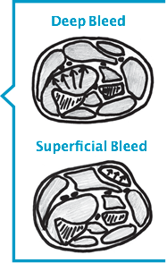

INTRODUCTION
Cette brochure a été conçue pour aider les personnes qui vivent avec des troubles de la coagulation à reconnaître les saignements articulaires et musculaires courants dès leur début afin que le traitement approprié puisse débuter le plus rapidement possible.
La brochure a été préparée pour que les personnes de tous âges puissent procéder à une autoévaluation et pour aider les parents à examiner leurs enfants.
Cette brochure vous aidera à :
- confirmer la présence et la localisation des saignements articulaires et musculaires courants;
- reconnaître les problèmes potentiellement graves qui peuvent découler de saignements articulaires et musculaires particuliers;
- déterminer à quel moment vous devez communiquer avec un centre de traitement des troubles de la coagulation (CTH);
- fournir des renseignements précis à votre CTH;
- documenter le saignement dans votre carnet de perfusion ou votre journal de suivi des saignements.s
La reconnaissance rapide et le traitement immédiat des saignements articulaires et musculaires sont indispensables pour prévenir certains problèmes à plus long terme. Votre centre de traitement des troubles de la coagulation travaillera avec vous pour mettre au point un plan de traitement. Cela vous demandera de vous rendre au CTH ou dans un centre local de soins de santé ou encore de vous administrer vous-même le produit à la maison.
En plus des produits prescrits pour enrayer le saignement, d’autres mesures comme le repos, la compression et l’évitement des exercices avec mise en charge sont également importants pour prévenir les complications à long terme. Un retour trop rapide aux activités régulières, sportives ou professionnelles pourrait retarder la guérison ou provoquer un nouveau saignement. Il est en outre essentiel de tenir des dossiers précis des soins administrés à la maison (au moyen de carnets de suivi des perfusions et des saignements) et de consulter régulièrement le CTH dans le cadre d’un traitement complet du trouble de la coagulation.
Déni de responsabilité: Cette brochure ne vise pas à se substituer à un examen ou à un traitement par le personnel du centre de traitement des troubles de la coagulation. Si vous participez à un programme d’administration des perfusions à domicile, tout saignement qui ne rentre pas dans l’ordre après deux doses de facteur/produit doit être signalé sans délai au centre de traitement.
Auteurs : Cette brochure a été préparée originalement sous le titre « Assessment and Treatment of Joint and Muscle Bleeds» en l’an 2000 par Kathy Mulder, physiothérapeute au Manitoba Bleeding Disorders Program, du Children’s Hospital de Winnipeg au Manitoba, et elle a été révisée par les physiothérapeutes suivants :
Pamela Hilliard, Hospital for Sick Children, Toronto – Bethany Iezama, IWK Health Centre, Halifax – Nichan Zourikian, CHU Sainte-Justine, Montréal
La présente version 2014 a été préparée par les physiothérapeutes suivantes :
Julia Brooks, Alberta Children’s Hospital, Calgary – Carolyn Jarock, IWK Health Centre, Halifax – Kathy Mulder, Children’s Hospital, Winnipeg – Sandra Squire, St. Paul’s Hospital, Vancouver
Révision par Eric K. et Justin S.
Illustrations par Chad Budyk et Kathy Mulder.
Copyright 2014
Saignements articulaires
Principes
- Une articulation est le point de jonction où deux os sont réunis et peuvent bouger.
- Les saignements peuvent affecter n’importe quelle articulation de l’organisme.
- Les saignements articulaires les plus fréquents affectent les chevilles, les coudes et les genoux.
- Le moindre choc peut déclencher un saignement.
- Les saignements qui ne sont pas soignés adéquatement et les saignements à répétition dans une même articulation peuvent entraîner des lésions permanentes.
Premiers symptômes d’un saignement articulaire
Un parent peut remarquer que son enfant boite ou qu’il a de la difficulté à bouger un membre.
La personne qui souffre du trouble de la coagulation sentira :
- une raideur ou une sensation de «picotements»;
- de l’inconfort au repos et à la mobilisation.
L’enflure n’est pas immédiatement perceptible; il est donc important de vérifier :
- la température de l’articulation au toucher : l’articulation semble plus chaude comparativement aux tissus avoisinants;
- une perte d’amplitude de mouvement comparativement au bras ou à la jambe opposés OU à l’amplitude de mouvement habituelle;
- une sensibilité au toucher.
Si le saignement persiste, on observera :
- une enflure;
- de la douleur;
- et parfois, une rougeur.
Traitement d’un saignement articulaire
Les principes de premiers soins recommandés pour tous les saignements articulaires se résument ainsi, par les lettres R-R-G-I-C-E.
R = Traitement de remplacement par facteur de la coagulation. Administrer le facteur en suivant les directives du centre de traitement.
R = Repos. Ne pas utiliser l’articulation tant qu’elle est douloureuse ou enflée. Si le saignement affecte la jambe, utiliser des béquilles ou un fauteuil roulant. S’il affecte le bras, utiliser une attelle pour le reposer.
G = Glace. La glace peut aider à soulager la douleur. On peut appliquer un bloc réfrigérant (ice pack), un gel réfrigérant ou de la glace concassée. Il faut toujours envelopper la glace dans une serviette éponge humide d’abord et ne jamais l’appliquer directement sur la peau. Pour un soulagement plus efficace, il est préférable que la glace entoure complètement l’articulation. Dans le cas des petites articulations, on laissera la glace en place pendant 5 à 10 minutes; pour les articulations plus grosses, il faut parfois maintenir la glace en place jusqu’à 20 minutes. On applique de nouveau la glace toutes les deux heures pendant les deux ou trois premiers jours ou jusqu’à ce que la douleur ait diminué.Cesser l’utilisation de la glace si la douleur augmente.
I = Immobilisation. Si l’articulation est très enflée ou si elle ne bouge plus, on peut la protéger à l’aide d’une attelle ou d’un demi-plâtre. Les attelles peuvent aussi être utiles chez les jeunes enfants qui risquent de ne pas comprendre la raison de l’immobilisation. Voir page 24 – quand immobiliser. Votre CTH/physiothérapeute vous indiqueront le type et la durée de l’immobilisation requise.
C = Compression. Un bandage ou un manchon élastique soutiendront l’articulation et aideront à maîtriser l’enflure. Toutefois, si l’articulation est très douloureuse, la compression peut être difficile à tolérer. Il faut surveiller de près la circulation. Dès la moindre sensation d’engourdissement ou de picotements, il faut retirer immédiatement la compression.
E = Élévation. Le fait de garder l’articulation touchée à 15 cm (6 po) au-dessus du niveau du coeur réduira la pression exercée sur les vaisseaux sanguins lésés et ralentira l’enflure.
Pour tous les saignements articulaires
Après un saignement articulaire quel qu’il soit, il y aura de l’inflammation à l’intérieur de l’articulation à mesure qu’elle guérit. Cela est tout à fait normal dans le processus de guérison et peut durer quelques semaines, même si l’articulation paraît normale et qu’elle bouge bien. Un arrêt trop hâtif du traitement ou la reprise de toutes les activités avant que l’inflammation n’ait disparu peuvent provoquer un nouveau saignement.Le traitement préconisé par votre CTH doit être maintenu jusqu’à ce que l’articulation soit redevenue normale.
CHEVILLE
Ce que vous pourriez observer :
- Boitement;
- Démarche sur la pointe des pieds, incapacité de placer le talon au sol;
- Démarche le pied tourné vers l’extérieur.
Ce que vous pourriez ressentir :
- Chaleur à l’avant de la cheville.
Ce que vous devriez surveiller :
- Enflure - y a-t-il de l’enflure à l’avant de la cheville ou autour des os de chaque côté de la cheville?
- Mouvement - le pied peut-il être fléchi aussi haut que l’autre pied? (Faites l’exercice le genou fléchi.)
Ce que vous devriez faire :
- Suivez le plan de traitement de votre CTH :
- - Utilisez le facteur de remplacement, comme on vous l’a indiqué;
- - Mettez l’articulation au repos. Ne marchez pas sur ce pied. Utilisez des béquilles ou une marchette si vous le pouvez ou un fauteuil roulant (une poussette ou une voiturette pour les jeunes enfants);
- - Commencez les exercices après l’arrêt du saignement, comme votre physiothérapeute vous l’aura indiqué.
- Continuez d’appliquer le plan de traitement jusqu’à ce que la cheville retrouve son état d’avant le saignement. Pour des articulations en santé, cela signifie généralement :
- - La cheville peut fléchir vers le bas et vers le haut, complètement et sans douleur;
- - Il n’y a aucune enflure perceptible;
- - La cheville n’apparaît pas boursouflée ou enflée;
- - Il n’y a aucune douleur à la mise en charge;
- - La force et l’équilibre sont revenues.
GENOU
Ce que vous pourriez observer :
- Un boitement, une démarche avec le genou fléchi;
- L’incapacité de déplier et/ou de fléchir le genou complètement.
Ce que vous pourriez ressentir :
- Chaleur à l’avant du genou et de chaque côté de la rotule;
- Enflure de chaque côté et au-dessus de la rotule.
Ce que vous devriez surveiller :
- Enflure - pouvez-vous voir les creux de chaque côté de la rotule? Ont-ils la même apparence comparativement à l’autre genou?
- Le genou peut-il être déplié complètement sans effort?
- Le genou peut-il fléchir complètement sans effort?

Ce que vous devriez faire :
- Suivez le plan de traitement de votre CTH :
- - Utilisez le facteur de remplacement, comme on vous l’a indiqué;
- - Mettez l’articulation au repos. Utilisez des béquilles ou une marchette si vous le pouvez ou un fauteuil roulant (une poussette ou une voiturette pour les jeunes enfants);
- - Commencez les exercices après l’arrêt du saignement, comme votre physiothérapeute vous l’aura indiqué.
- Continuez d’appliquer le plan de traitement jusqu’à ce que le genou retrouve son état d’avant le saignement. Pour des articulations en santé, cela signifie généralement :
- - Le genou peut être fléchi complètement et sans douleur;
- - Il n’y a aucune enflure perceptible;
- - Le genou n’apparaît pas boursouflé ou enflé;
- - Il n’y a aucune douleur à la mise en charge;
- - Les muscles de la cuisse sont forts.
COUDE
Ce que vous pourriez observer :
- Réticence à utiliser le bras et expression de douleur à la mobilisation;
- Coude maintenu fléchi et près du corps.
Ce que vous pourriez ressentir :
- Chaleur au coude (par opposition au pli du coude).
Ce que vous devriez surveiller :
- Enflure - pouvez-vous voir les creux postérieurs (fossettes) au niveau du coude?
- Le bras peut-il être déplié complètement? (Noter : De nombreux enfants peuvent déplier leur coude AU -DELÀ d’une ligne droite [hyperlaxité]. Assurez-vous de le comparer avec l’autre bras.);
- Le coude peut-il être déplié complètement lorsque la paume est tournée vers le haut?
- - Le coude se compose de deux articulations : l’une qui se plie et se déplie comme une penture et l’autre qui permet à l’avant-bras de pivoter. Pour les saignements légers ou qui viennent de débuter, chacun de ces mouvements peut sembler complet si on les teste isolément, mais on observera une perte de mobilité si les deux mouvements sont testés ensemble. Votre physiothérapeute peut vous enseigner quels signes surveiller.

Ce que vous devriez faire :
- Suivez le plan de traitement de votre CTH :
- - Utilisez le facteur de remplacement, comme on vous l’a indiqué. (Si vous vous administrez vous-même vos perfusions, vous pourriez avoir besoin d’aide à cet effet.);
- - Mettez l’articulation au repos. Vous aurez peut-être besoin d’une écharpe ou d’une attelle;
- - Commencez les exercices après l’arrêt du saignement, comme votre physiothérapeute vous l’aura indiqué.
- Continuez d’appliquer le plan de traitement jusqu’à ce que le coude retrouve son état d’avant le saignement. Pour des articulations en santé, cela signifie généralement :
- - Il n’y a aucune enflure perceptible;
- - Le coude n’apparaît pas boursouflé ou enflé;
- - Le coude peut être déplié aussi loin que l’autre coude;
- - Le coude peut se plier et se déplier facilement et sans douleur, même lorsque la paume est tournée vers le haut.
ÉPAULE

Ce que vous pourriez observer :
- Bras maintenu près du corps;
- Réticence à utiliser le bras.
Ce que vous pourriez ressentir :
- Chaleur à l’avant de l’épaule.
Ce que vous devriez surveiller :
- Enflure - pouvez-vous sentir le creux à l’avant de l’épaule? Le creux se présente-t-il de la même façon que pour l’autre épaule ou semble-t-il y avoir de l’enflure?
- Pouvez-vous lever le bras au-dessus de votre tête entièrement et sans douleur?
- Pouvez-vous placer entièrement la main sur votre nuque, et ce, sans douleur?

Ce que vous devriez faire :
- Suivez le plan de traitement de votre CTH :
- - Utilisez le facteur de remplacement, comme on vous l’a indiqué. (Si vous vous administrez vous-même vos perfusions, vous pourriez avoir besoin d’aide à cet effet.);
- - Déposez le bras sur des oreillers ou suspendez-le dans une écharpe;
- - Commencez les exercices après l’arrêt du saignement, comme votre physiothérapeute vous l’aura indiqué.
- Continuez d’appliquer le plan de traitement jusqu’à ce que l’épaule retrouve son état d’avant le saignement. Pour des articulations en santé, cela signifie généralement :
- - Le bras peut être levé au-dessus de la tête sans douleur;
- - Le bras peut être levé vers l’extérieur, jusqu’à l’oreille, sans douleur;
- - Le bras peut être porté à la nuque facilement;
- - Comparez chacun de ces mouvements à ceux de l’autre bras. Les mouvements semblent-ils pareils? Il est facile de «tricher» avec les mouvements de l’épaule.
ARTICULAT IONS DES DOIGTS
Les saignements dans les petites articulations de la main sont rares. Ils résultent habituellement d’un traumatisme direct et connu, par exemple, recevoir une balle sur un doigt, ou le coincer et le tordre.
En plus de soigner le saignement, il est important de vérifier qu’il n’y ait pas de fracture ou d’entorse grave. Assurez-vous de communiquer avec votre CTH pour qu’on vous dise quoi faire.
Ce que vous pourriez observer :
- Les doigts restent en position légèrement fléchie.
Ce que vous pourriez ressentir :
- Chaleur sur le dessus de l’articulation;
- Douleur au mouvement.
Ce que vous devriez surveiller :
- Enflure;
- Incapacité de plier ou de déplier le doigt complètement;
- Douleur au mouvement et sensibilité au toucher.
Ce que vous devriez faire :
- Appelez votre CTH. Des radiographies pourraient être nécessaires;
- Suivez le plan de traitement de votre CTH :
- - Utilisez le facteur de remplacement, comme on vous l’a indiqué. (Si vous vous administrez vous-même vos perfusions, vous pourriez avoir besoin d’aide à cet effet.);
- - Mettez la main au repos; vous pourriez avoir besoin d’une attelle.
- Continuez d’appliquer le plan de traitement jusqu’à ce que le doigt puisse fléchir et se déplier complètement sans douleur.
ARTICULAT IONS DES ORTEILS
Les saignements des petites articulations des orteils sont rares. Ils peuvent affecter les enfants lorsqu’ils jouent en position accroupie ou assis sur les talons.

Chez les enfants plus âgés, les adolescents et les adultes, les saignements articulaires aux orteils peuvent survenir si la personne s’est frappé le pied ou s’est fait écraser l’orteil. Si on connaît l’origine du traumatisme, il est important de s’assurer qu’il n’y ait pas de fracture. Si on NE connaît PAS l’origine du saignement, il faut communiquer avec le CTH pour écarter d’autres problèmes de santé.
Ce que vous pourriez observer :
- Boitement.
Ce que vous pourriez ressentir :
- Chaleur sur l’articulation;
- Douleur à la mobilisation.
Ce que vous devriez surveiller :
- Enflure;
- Perte de mobilité - les orteils peuvent-ils être fléchis et dépliés complètement? (Comparez avec l’autre pied).
Ce que vous devriez faire :
- Communiquez avec votre CTH. Il s’agit d’une localisation inhabituelle pour un saignement. Des examens plus approfondis pourraient être requis;
- Suivez le plan de traitement de votre CTH :
- - Utilisez du facteur s’il s’agit d’un saignement;
- - Mettez le pied au repos; utilisez une canne, des béquilles ou encore un fauteuil roulant (une poussette ou une voiturette pour les jeunes enfants).
- Continuez d’appliquer le plan de traitement jusqu’à ce que le mouvement soit complet et que vous puissiez marcher normalement, sans douleur.
Saignements musculaires
Principes
- N’importe quel muscle peut présenter un saignement;
- Un saignement musculaire peut survenir lorsqu’un muscle est trop étiré, lors d’un choc contre quelque chose de dur ou lorsqu’il est surutilisé;
- Les causes fréquentes des saignements musculaires sont notamment :
- - les glissades;
- - les chutes;
- - les collisions avec une personne ou un objet;
- - le fait de soulever un objet trop lourd; ou
- - les mouvements répétitifs.
- Le saignement commence lorsque les petites fibres musculaires sont déchirées. Ces blessures guérissent en laissant des cicatrices qui ne sont pas aussi flexibles que le tissu musculaire normal. Il faut étirer le muscle de la façon appropriée, sinon une nouvelle blessure pourrait facilement survenir.
Les saignements musculaires sont différents des saignements articulaires parce que…

Les saignements musculaires sont moins fréquents que les saignements articulaires. Par conséquent, bien des gens ne comprennent pas aussi bien en quoi ils consistent : « O h, je me suis juste étiré un muscle ». En fait, les saignements musculaires peuvent avoir des conséquences plus graves que les saignements articulaires en raison de leurs complications.
Dans certains muscles volumineux, l’enflure extérieure n’est pas toujours perceptible au début parce que le sang ne reste pas dans une seule zone et fuit lentement entre les différentes couches musculaires.
De nombreux muscles plus en profondeur sont enveloppés d’une membrane dense appelée fascia, formant des compartiments. Les nerfs et les vaisseaux sanguins sont également contenus dans ces compartiments. Les saignements qui affectent ces muscles remplissent rapidement cet espace et peuvent entraîner une pression sur les nerfs et les vaisseaux sanguins et des dommages au muscle.
Certains muscles supportent plus d’une articulation. Le mouvement de l’une ou l’autre des articulations peut sembler normal au début. Toutefois, si LES DEUX articulations sont mises à l’épreuve en même temps, on pourra confirmer le saignement musculaire.
Premiers symptômes d’un saignement musculaire
Un parent peut remarquer que l’enfant boite ou qu’il a de la difficulté à bouger un membre.
La personne atteinte du trouble de la coagulation remarquera :
- de l’inconfort et une sensation de raideur ou picotements;
- de la douleur au relâchement du muscle;
- de la douleur à la contraction du muscle (mis au travail).
L’enflure n’est pas immédiatement perceptible; c’est pourquoi il est important de surveiller :
- de la chaleur dans la région du saignement;
- de la sensibilité à l’application de pression.
Signes plus tardifs
- douleur, même lorsque le muscle est au repos;
- enflure, fermeté et sensibilité du muscle;
- sensation de PICOTEMENTS et D’ENGOURDISSEMENT.
Si l’un ou l’autre de ces signes est présent, il s’agit d’une situation d’urgence. Appelez votre centre de traitement SANS TARDER!
Traitement d’un saignement musculaire
Les principes de premiers soins recommandés pour tous les saignements musculaires se résument ainsi, par les lettres R-R-G-I-C-E.
R = Traitement de remplacement par facteur de la coagulation. Administrer le facteur en suivant les directives du centre de traitement.
R = Repos. Ne pas utiliser le muscle tant qu’il est douloureux. Si le saignement affecte la jambe, utiliser des béquilles ou un fauteuil roulant. S’il affecte le bras, utiliser une attelle pour le reposer.
G = Glace. La glace peut aider à soulager la douleur si le saignement musculaire n’est pas trop
profond. On peut appliquer un bloc réfrigérant (ice pack), un gel réfrigérant ou de la glace
concassée. Il faut toujours envelopper la glace dans une serviette éponge humide d’abord et
ne jamais l’appliquer directement sur la peau.
Pour un soulagement plus efficace, il est préférable que la glace entoure complètement le
muscle. Pour les saignements des muscles plus volumineux, il faut parfois maintenir la glace en
place jusqu’à 20 minutes. On applique de nouveau de la glace toutes les deux heures pendant
les deux ou trois premiers jours ou jusqu’à ce que la douleur ait diminué. Cesser l’utilisation de
la glace si la douleur augmente.
I = Immobilisation. En présence d’une douleur intense et d’une perte de mobilité, on peut utiliser une attelle ou un demi-plâtre pour permettre le relâchement musculaire. Les attelles peuvent aussi être utiles chez les jeunes enfants qui risquent de ne pas comprendre la raison de l’immobilisation. Voir page 24 – quand immobiliser. Votre CTH/physiothérapeute vous fournira des conseils sur le type d’immobilisation à utiliser et sur sa durée.
C = Compression. Un bandage élastique ou un coussinet de compression peuvent servir à comprimer le muscle et à aider à maîtriser l’enflure. Il faut surveiller de près la circulation. Dès la moindre sensation d’engourdissement ou de picotements, ou si la douleur augmente, il faut retirer immédiatement la compression et informer votre CTH.
E = Élévation. Le fait de garder le muscle blessé à 15 cm (6 po) au-dessus du niveau du coeur réduira la pression exercée sur les vaisseaux sanguins lésés et ralentira le saignement jusqu’à ce qu’on puisse administrer la perfusion de facteur.
Pour tous les saignements musculaires
Il faut continuer le traitement en suivant les directives du CTH jusqu’à ce que le muscle soit complètement rétabli et qu’il ait repris toute sa force. Si vous recommencez vos activités sportives ou professionnelles trop rapidement, il y a de fortes chances que le muscle saigne de nouveau. Il est important d’effectuer les exercices appropriés pour regagner entièrement votre force et votre flexibilité musculaires. Communiquez avec votre physiothérapeute pour des recommandations avant de reprendre vos activités régulières, qu’il s’agisse d’activités sportives ou professionnelles.
MUSCLE PSOAS
(ou iliopsoas)
Le muscle psoas est situé à l’avant de l’articulation de la hanche; c’est un muscle qui s’insère profondément dans le bassin.

Ce muscle peut être lésé lors d’un étirement soudain (p. ex., trébucher ou glisser sur la glace) ou encore lors d’un usage répété (p. ex., lors d’activités sportives ou sexuelles).
Ce que vous pourriez observer :
- Boitement;
- Démarche sur la pointe des pieds; OU
- Démarche avec le genou fléchi; OU
- Démarche avec le corps légèrement tordu; OU
- Démarche avec les fesses plus bombées qu’à l’habitude; OU
- Toutes ces réponses.
Ce que vous pourriez ressentir :
- Malaise au niveau de l’aine OU du dos OU du devant de la cuisse;
- Difficulté à s’allonger à plat sur le dos.
Ce que vous pouvez faire pour vérifier :
- Étendez-vous sur le dos et commencez avec la hanche et le genou fléchis.
- Allongez délicatement votre jambe. Arrêtez si vous constatez que votre dos est arqué ou que cela aggrave la douleur à l’aine, à la cuisse ou au dos.

Ce que vous DEVEZ faire :
- Appelez immédiatement le CTH pour qu’on vous dise quoi faire;
- Suivez le plan de traitement de votre CTH :
- - Utilisez le facteur de remplacement, comme on vous l’a indiqué;
- - ÉVITEZ la position debout et la marche;
- - N’essayez PAS d’utiliser des béquilles;
- - N’essayez PAS de conduire votre automobile;
- - REPOSEZ-VOUS au lit, la jambe soutenue en position confortable jusqu’à ce que vous puissiez déplier la hanche confortablement sans arquer votre dos;
- - Parlez à votre physiothérapeute au sujet de la meilleure façon de vous REPOSER et d’immobiliser ce muscle. Il est inutile d’utiliser la glace, la compression ou l’élévation pour les saignements du psoas parce que ce muscle est trop profond.
Ce que vous devriez surveiller :
- Si vous percevez des picotements à la cuisse, il s’agit d’une situation grave qui pourrait indiquer que les nerfs et les vaisseaux sanguins sont comprimés. Appelez votre CTH sans délai;
- Si les muscles qui permettent de déplier le genou sont faibles, il s’agit d’une situation grave : le nerf qui contrôle ces muscles a été comprimé et pourrait être endommagé. Appelez votre CTH sans délai.
Reprise des activités :
- Le muscle psoas peut facilement être blessé de nouveau s’il n’est pas d’abord mis au repos, puis remis en mouvement au moyen d’exercices appropriés;
- Suivez le plan de traitement de votre équipe du CTH jusqu’à rétablissement complet;
- Un programme supervisé de physiothérapie SERA nécessaire pour assurer un rétablissement complet;
- Il peut falloir plusieurs SEMAINES avant que le muscle ne revienne à la normale;
- Ne recommencez pas à marcher tant que votre physiothérapeute ne vous en aura pas donné l’autorisation;
- Vérifiez TOUJOURS auprès de votre physiothérapeute avant de reprendre vos activités régulières, que ce soit pour le travail ou pour les activités sportives.
FOREARM MUSCLES
Groups of muscles are located on the front and the back of the forearm. These muscles move the wrist and the fingers. The muscles on the front of the forearm can be injured by sustained gripping (e.g. biking, playing guitar). The muscles on the back of the arm are often injured by repeated use (e.g. hammering or tennis). Both groups can also be injured by a direct blow such as getting hit by a baseball.

What you may see
- Difficulty using the arm;
- Pain with gripping or lifting objects.
what you may feel:
- Warmth and tenderness in the soft fleshy part of the forearm;
- Pain in the forearm if the wrist is bent back and forth.
What you can do to assess:
- The front (palm) side of the forearm is more commonly the site of bleeding;
- Check flexibility by bending the wrist back while keeping the fingers straight;
- If this is comfortable, gently straighten the elbow. Compare the amount of movement to the opposite arm;

- If the muscles on the back of the arm are involved, bend the fingers while bending the wrist down;
- If this is comfortable, gently straighten the elbow. Compare to the opposite arm.
What you MUST do:
- Call the HTC for instructions;
- Follow the treatment plan from your HTC:
- - Use factor as directed. (If you self- infuse, you may need help with this);
- - You may require a splint to help rest the muscle.
What you should watch for:
- "Pins and needles" or tingling in the hand. This is serious and can cause permanent damage if not treated properly. Contact the HTC immediately. The forearm muscles, nerves and blood vessels are all surrounded by a tight and tough covering called fascia. If blood begins to fill this space, the nerves and blood vessels can be compressed. (see illustrations on page 12 - DEEP AND SUPERFICIAL MUSCLE BLEEDS)
Returning to activity:
- See your physiotherapist and continue your exercises until full flexibility and strength of your wrist AND fingers is restored;
- ALWAYS check with your physiotherapist before going back to work or sports.
THE CALF

The calf contains a number of muscles. The calf muscles can be injured by a direct blow (e.g. kick), or from overuse during sports or work. The most frequently injured is the one closest to the surface, called the "gastrocnemius" or "gastroc"; it runs from the heel to just above the knee. The next layer of the calf muscle is called soleus. It stops below the knee. Deeper still are the muscles that bend the toes.
What you may see
- Limping;
- Walking with the foot turned out;
- Unable to walk with the heel flat on the floor.

what you may feel:
- A tight feeling in the lower leg/calf;
- Tenderness if the calf muscle is squeezed;
- Soreness in the muscle if you move your ankle up and down;
- Firmness in the muscle.
What you can do to assess:
- Check flexibility of the muscle and compare to the
other side. In the early stages of a gastroc bleed, ankle movements may be the same in both legs when the knee is in a bent position. However, if the knee is straight there will be more tension on the muscle; ankle movement may be limited and the calf will be painful when stretched.
To confirm the location of the bleed, you will need to test each muscle separately.
- TEST 1
- Sit with knees bent. Try to get both heels flat on the floor. Keeping the heel on the floor, bend the knee and slide the foot back. Compare the movement and the tightness in the calf muscle to other leg. If there is discomfort and the movement is limited, the bleed could be in either the gastroc or the soleus.
- If there is no discomfort with this test, go to test 2.
- TEST 2
- Stand up. Place the heel flat on the floor. Gently straighten knee. If this causes pain in the calf, the bleed is most likely in the gastroc.

- TEST 3
- Very rarely, the bleed is in the deepest muscles, the toe flexors. To con-firm, stand with the heel flat and the knee straight. With the toes flat on the floor, lift the heel. If this produces pain in the calf, the bleed is most likely in the deep flexor compartment. This can be serious.
what you should do:
- Call the HTC for instructions;
- Follow the treatment plan from your HTC:
- - Use factor as directed;
- - Rest the muscle: limit standing until you can place the foot flat on the floor without pain in the muscle;
- - Avoid walking, except with crutches or a walker until you can place the heel down easily, without strain;
- - Continue to use crutches until you can walk correctly. You should be able to put your heel down first and put your foot flat, and then push off from your toes.

What you should watch for:
- If there is any numbness or tingling in the toes, this is serious. Call the HTC immediately;
- If there is severe pain and/or throbbing in the calf, this is serious and could be an emergency. Call the HTC immediately.
Returning to activity:
- Do the exercises as prescribed by your physiotherapist until flexibility and strength are back to normal;
- Check with your physiotherapist before you return to work, especially if your job requires a lot of standing or walking;
- Check with your physiotherapist before running or returning to sports. If the muscle is not flexible or strong enough, it can easily be injured again by running or jumping.
HAMSTRINGS
The hamstring muscles are located along the back of the thigh. Their job is to extend the hip and to bend the knee. They can be injured by a sudden stretch or by overuse. When teenagers go through a growth spurt, these muscles may not be able to stretch enough to keep up with the rapid growth of the bones. This makes them more likely to be injured, especially during sports. Hamstrings can also become tight after knee bleeds because they tighten up to protect the knee.

What you may see
- Limping, with knee held a bit bent, and shorter steps on the sore side.
what you may feel:
- Warmth and tenderness in the back of the thigh. Hamstring bleeds can be quite painful.
What you can do to assess:
- The hamstrings go across the hip and the knee. It may be possible to straighten the knee completely while the hip is straight, but not when the hip is bent.
- TEST 1
- Standing: can the knee go completely straight without discomfort at the back of the thigh? If no, begin your treatment plan. If yes, proceed to test 2.

- TEST 2
- Sit on a chair, with your back straight. Slowly and gently straighten the knee, until a pulling sensation is felt in the back of the thigh. Compare the amount of movement and discomfort to the other leg.
What to do:
- Follow the treatment plan from your HTC:
- - Use factor as directed;
- - Limit walking, even with a walking aid, until flexibility testing is comfortable;
- - If you are using a walking aid, you can rest your foot on the floor to take the strain off the muscle but you should not put your full weight on the foot.
What you should watch for:
- Hamstring bleeds can be quite painful. Depending on the location of the bleed, it may be difficult to sit comfortably.
Returning to activity:
- Hamstrings are re-injured very easily, even in professional athletes, if they are not rested and then stretched and strengthened properly. A supervised program of physiotherapy WILL be necessary to ensure full recovery;
- Check with your physiotherapist before going back to any type of running.
QUADRICEPS
The quadriceps muscle (quads) is a group of four muscles located on the front of the thigh. Their main job is to extend the knee; the most superficial of these muscles also helps to bend the hip. The quads can be injured by a sudden forceful stretch, such as during sprinting without warming up first. More frequently, they are injured by a direct blow- e.g. contact with a baseball, or another player's knee.
What you may see
- Limping, with shorter steps on that side;
- Difficulty bending the knee.
what you may feel:
- Tenderness and possibly warmth in the heart of the muscle.

What you can do to assess:
- TEST 1
- Try bending the knee all the way (slide heel towards buttocks). If the bleed is large and involves the deeper muscles this will be uncomfortable. If only the superficial muscle is injured, you may need to use the next test to confirm.
- TEST 2
- Lie on your back, near the edge of your bed. Bend your opposite knee up to keep your back flat. Gently, let the sore leg bend over the edge of the bed. If there is a bleed into the quads, the hip may bend up, and the pain in the thigh will increase as the knee is bent.

what you should do:
- Follow the treatment plan from the HTC:
- - Use factor as directed;
- - Do not walk on the injured leg. Use crutches or a wheelchair;
- - The physiotherapist may recommend compression or splinting;
- - After the bleeding has stopped, begin exercises as directed by your physiotherapist;
- - Continue the exercises until the muscle is flexible and strong.
What to watch for:
- Quadriceps bleeds can swell a huge amount, and heal with scarring or even calcification (calcium deposits in the muscle) which will limit motion.
Returning to activity:
- Quadriceps bleeds usually need a supervised program of physiotherapy to assist recovery and regain full flexibility;
- Check with your physiotherapist before going back to work, and before resuming running or sports.
GLUTEAL MUSCLES (buttocks)
These large fleshy muscles can be injured by falling backwards and landing directly on the buttocks. It is a common site of bleeding in toddlers who are just learning to walk. A bleed into the buttocks can also occur in adults who slip and fall on stairs or on ice.
What you will see
- Unable to sit comfortably;
- Difficulty bending the hip;
- A mild limp, with shorter steps on that side.

What you will feel:
- Tenderness and a lump in the heart of the muscle.
What you can do to assess:
- Try to bend the hip (knee toward chest). A pulling sensation in the buttock may indicate a bleed;
- There may also be a visible dif- ference in the contour of the two sides of the buttocks
what you should do:
- Contact the HTC and follow the treatment plan:
- - Use factor as directed;
- - Do not walk on the injured leg. Use crutches;
- - Avoid sitting until the tenderness decreases;
- - After the bleeding has stopped, begin exercises as directed by your physiotherapist.
What to watch for:
- Buttocks bleeds can swell a large amount and take a long time to heal completely.
Returning to activity:
- Avoid activities that could re-injure the muscle while it is healing. Use extra padding to protect toddlers;
- Check with your physiotherapist before going back to running, sports or returning to work.
WHEN TO IMMOBILIZE
Bleeds that are caught early may not need to be immobilized if the individual can rest adequately.
However, immobilization may be recommended in the following situation:
- Children, who may be too young to use walking aids or to understand the need to "rest".
- Joint bleeds where there is visible swelling, pain and restricted motion.
- Muscle bleeds (especially forearm, hamstrings, calf muscles), if there is pain and difficulty with movement. Splints for muscle bleeds should be changed every few days as the muscle heals and flexibility improves.
Always contact the HTC physiotherapist for recommendations about when and how to use immobilization.
A half cast or removable splint is better than a full cast which could cut off circulation if the swelling increases. A splint should be left on for only two-three days and then the motion should be re-checked. More rest may be necessary to allow complete healing. However, longer periods of immobilization will lead to weakness and leave the area at risk for a new injury. You should see the physiotherapist for recommendations about exercise during and after immobilization.
If there are pins and needles or tingling which suggest nerve compression, contact your HTC immediately. Nerve compression should be treated as an emergency to prevent permanent damage. Observation in hospital may be recommended.
TARGET JOINTS, ARTHROPATHY AND SYNOVITIS
These are terms that refer to chronic problems with joints that have had many bleeds. With prompt and sufficient treatment, we should be able to minimize these conditions. However, if a joint has had some damage, it can be difficult to tell the difference between a new bleed and discomfort from a chronic problem.
Synovitis is irritation and inflammation of the lining of the joint. This is a normal part of the healing process after a joint bleed. However, with repeated bleeds into the same area, the swelling continues and becomes chronic. This is referred to as a target joint. The joint bleeds easily and often.
Arthropathy means "degeneration of a joint". The joint surfaces are worn and the joint can be stiff and painful.
This table will help identify the cause of joint pain and swelling.

If chronic synovitis develops, a new treatment plan must be discussed with the bleeding disorder treatment team. Regular factor, a splint or brace for activities, and an exercise program are all things that should help synovitis get better. Sometimes surgery is necessary.
If arthropathy develops, a new plan must be discussed with the team. Treatment may include regular physiotherapy, medication, splints or braces, activity modification and sometimes surgery.